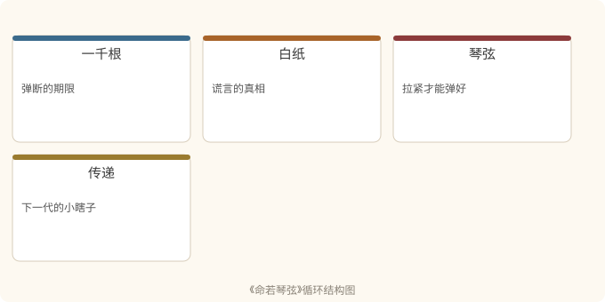

命若琴弦
一、基本信息
| 作者 | 史铁生 |
|---|---|
| 成书/出版 | 1985年发表（英文维基 B218：Like a Banjo String (命若琴弦, 1985)） Shi Tiesheng — Wikipedia (EN)（百科全书） |
| 国别/地区 | 中国 |
| 时代 | 现当代 · 当代 |
| 体裁 | 中篇小说 |
| 语言 | 汉语（白话） |

《命若琴弦》循环结构图（主题·结构图）
二、创作背景
英文维基（B218）：'Like a Banjo String (命若琴弦, 1985), a novella adapted into the 1991 film Life on a String directed by Chen Kaige'（1991年陈凯歌改编电影《边走边唱》）。
主题：老瞎子与小瞎子——'弹断一千根琴丝'作为药引的谎言与希望（通说）。
三、内容脉络
老瞎子弹断第一千根琴丝发现药方是白纸——把谎言传给小瞎子（通说待核）。
'人的命就像这琴弦，要拉紧了才能弹好'（名句通说待核）。
四、主要人物表
| 人物 | 身份 | 说明 |
|---|---|---|
| 老瞎子 | 说书人 | 希望的守护者（通说） |
| 小瞎子 | 徒弟 | 下一轮循环（通说待核） |
五、主题与艺术特点
- 希望作为生存的琴弦（通说）。
- 谎言的伦理：知道与不知道（通说）。
- 残障与目的论（通说——史铁生式）。
六、影响与评论
- 英文维基：1991年陈凯歌电影 Life on a String（B218）。
Shi Tiesheng — Wikipedia (EN)（百科全书） - 作者页：史铁生以残障经验写存在之思（B218 作者级定位）。
Shi Tiesheng — Wikipedia (EN)（百科全书）
七、阅读建议
难点
- 寓言式的纯净文本。
- '弹断一千根'的循环结构。
- 《命若琴弦》（收于史铁生作品集，通说待核）。
先《我与地坛》后本作；再看电影《边走边唱》。
八、待核实
- 首刊刊物（《现代人》1985年说）待核。
- 名句原文核对。
- 电影《边走边唱》1991年（陈凯歌——B218 已载）核对。
本页主要来源
史铁生的其他收录作品：我与地坛